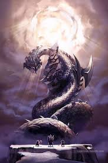
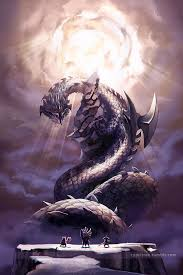

I'm Anthony Liotta and I'm nearly a professional bowler. I play a
big part in my robotics team as an engineer and have a great love of
video games and science. I grew up playing video games from as young an
age as 3 years old and I played the old arcade games like donkey kong 3
and 64th street a detective's story. I didn't get a console till I was 10
and I got a ps2 with seven games, two controllers and a memory card for
$100 at a garage sale. Those seven years have let me explore many arcade
title on my father's MAME machine(multiple arcade machine emulator).
Of course I have played the classics like donkey kong and pac-man and
tetris, but I have also played lesser known titles such as boot camp and
zoo keeper
 
